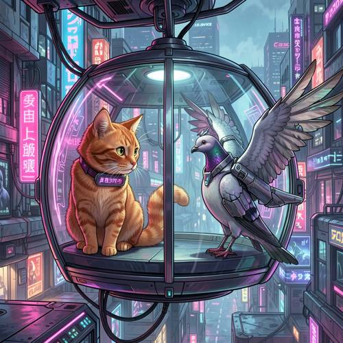
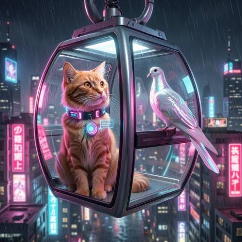
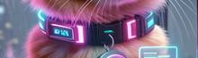

Entity Layout — In Cyberpunk style, an orange cat wearing a translation collar was on
In Cyberpunk style, an orange cat wearing a translation collar was on the left side of the transparent suspension cabin, looking curiously at a dove with metal feathers on the right side of the cabin.

Direct — one call, no iteration

Continuum — Qwen3.8-27B + FLUX.2-klein-9B
Judge — Direct
PASSEntity Layout - Two-Dimensional Space — An orange cat is positioned on the left side of the interior of a transparent cabin, while a dove is on the right side of the interior of the cabin.
PASSStyle — The image displays a cyberpunk style, featuring a futuristic cityscape with tall buildings, abundant glowing neon signs in pink and blue hues, and a high-tech suspended cabin.
PASSRelationship - Inclusion — The orange cat and the dove are both located inside a transparent, spherical suspension cabin.
FAILCompound - Feature Matching — The image features an orange cat wearing a purple collar with a small, glowing device on it. There is also a dove, but while it wears a metallic harness over its wings and body, its feathers are not made of metal.
Judge — Continuum
PASSEntity Layout - Two-Dimensional Space — The image shows an orange cat sitting on the left side inside a cabin and a dove perched on the right side inside the same cabin.
PASSStyle — The image exhibits a cyberpunk style through its depiction of a futuristic, rainy cityscape at night, filled with skyscrapers and glowing neon signs.
PASSRelationship - Inclusion — The image shows a transparent suspension cabin that contains both an orange cat and a dove.
PASSCompound - Feature Matching — The orange cat is wearing a futuristic collar with glowing components, which fits the description of a translation collar. The dove's feathers have a smooth, iridescent, and reflective quality, giving them a metallic appearance.
What the agent did
Thinking
Let's analyze the prompt: "In a Cyberpunk style, an orange tabby cat wearing a translation collar is on the left side of the transparent suspension cabin, curiously watching a dove with metallic feathers on the right side of the cabin." So what I need is: 1. Cyberpunk style 2. An orange cat wearing a translation collar (a collar with a translation device attached — probably glowing, sci-fi looking) 3. The cat is on the left side of the transparent suspension cabin 4. The cat is watching the dove curiously 5. A dove with metallic feathers on the right side of the cabin Let's generate this with flux2-klein. First, let's write a detailed prompt: "Cyberpunk style, interior of a transparent suspension cabin (a glass cable car cabin suspended over a neon city), an orange tabby cat wearing a high-tech glowing translation collar on the left side of the cabin, sitting and looking curiously to the right, on the right side a white dove with metallic iridescent feathers perched on the glass window, neon lights, rainy night city below, futuristic sci-fi, cinematic lighting" The image size is fixed at 1024x1024 by default. Let's generate. Okay, let's execute.
Step 1 — `generate_image`
{
"model": "flux2-klein",
"prompt": "Cyberpunk style, inside a transparent glass suspension cabin (a futuristic cable-car pod suspended high above a neon megacity at night). On the left side of the cabin sits a fluffy orange tabby cat wearing a high-tech glowing translation collar with a small holographic speech ring around its neck, the cat looking curiously to the right with wide amber eyes and perked ears. On the right side of the cabin, perched on the glass window, is a white dove with sleek metallic iridescent feathers reflecting neon pink and cyan light. Below the cabin a blurred neon city skyline with rain and holographic signs, cinematic sci-fi lighting, neon rim light, detailed, dramatic"
}
Result img_0
Thinking
The result is pretty good. Let me check the details: 1. Cyberpunk style ✓ — neon city, rain, neon signs 2. Orange cat ✓ — sitting on the left side of the transparent suspension cabin 3. Translation collar — the cat is wearing a collar with a glowing device and speech bubble icon attached ✓ — looks like a translation collar 4. Curious gaze ✓ — looking up toward the dove on the right 5. Dove with metallic feathers ✓ — perched on the right side of the cabin, metallic iridescent feathers One small point: the dove is on the right side of the cabin — yes, perched on the right side of the cabin's frame. The cat is on the left side. Let me inspect the close-up of the collar to make sure it looks like a translation collar (it has a speech bubble icon and glowing ring — good). I'll zoom in to confirm.
Step 2 — `inspect_region`
{
"image": "img_0",
"roi": "the collar on the cat's neck",
"padding": 0.3
}
Result img_1

Thinking
The collar has a glowing display, neon lights, and a speech bubble icon — reads clearly as a translation collar. The whole image is very good: - Cyberpunk style ✓ - Orange cat on the left side ✓ - Translation collar ✓ - Curious expression ✓ - Dove with metallic feathers on the right side ✓ - Transparent suspension cabin ✓ This is a strong result. Let me mark it as the best. No major edits needed. The cat's gaze is directed at the dove — looking to the right / up-right, where the dove is. Mark img_0 as the best and stop. Good enough as a stopping condition.
Model
This image really captures the prompt well: - **Cyberpunk style** — a rainy neon megacity, holographic signs, pink/cyan lighting ✓ - **Orange cat** on the left side of the transparent suspended cabin, wearing a glowing high-tech **translation collar** (the close-up shows a neon display, a speech-bubble icon, and a glowing ring) ✓ - **Curious expression** — wide amber eyes and raised ears, gazing toward the bird ✓ - **Dove with metallic feathers** perched on the glass on the right side of the cabin, with iridescent metal plumage reflecting the neon light ✓ Since all the elements are present and correct, I'll mark this as the best.
Step 3 — `mark_best`
{
"image": "img_0",
"reason": "All prompt elements present: cyberpunk neon rain scene, orange cat with glowing translation collar on the left of a transparent suspension cabin, curious expression, metallic-feathered dove on the right side of the cabin."
}
Thinking
The image has been marked. Done. I'll tell the user.
Model
Done! The final image is marked as the best result. It shows a cyberpunk night scene with an orange tabby cat wearing a glowing translation collar on the left side of a transparent glass suspension cabin, curiously watching a metallic-feathered dove perched on the right side, all suspended above a rainy neon megacity.